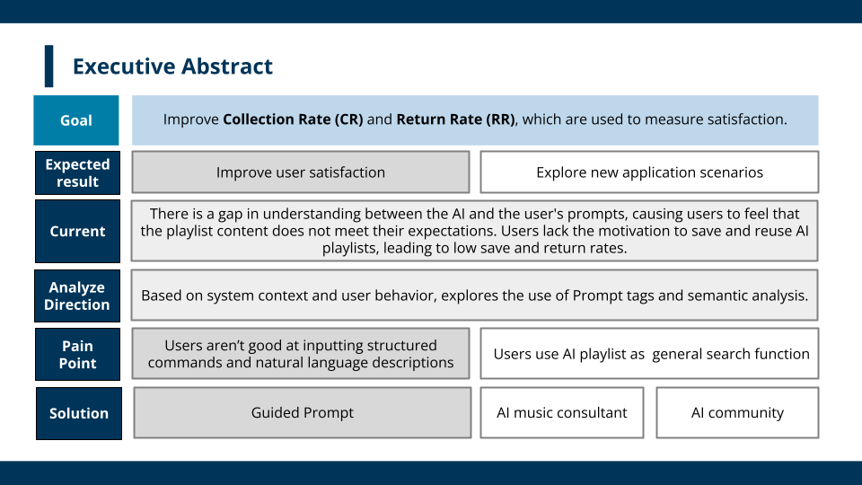

KKBOX AI Playlist Usage Insights and New Positioning
In this corporate collaboration at the NTU Data Analytics Club, I enhanced AI-driven playlist features by utilizing SBERT and K-Means clustering to analyze user intent. My analysis uncovered a critical "User Expectation Gap": customers were leveraging AI for precision searching rather than discovery. This insight pivoted the product direction, leading me to develop a guided prompt framework and a community-based deployment strategy that optimized human-AI interaction and achieved full-scale corporate adoption.

Full Project Report